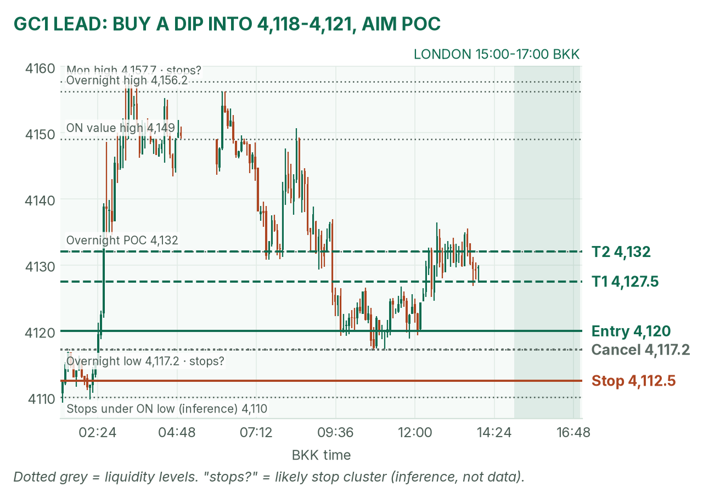
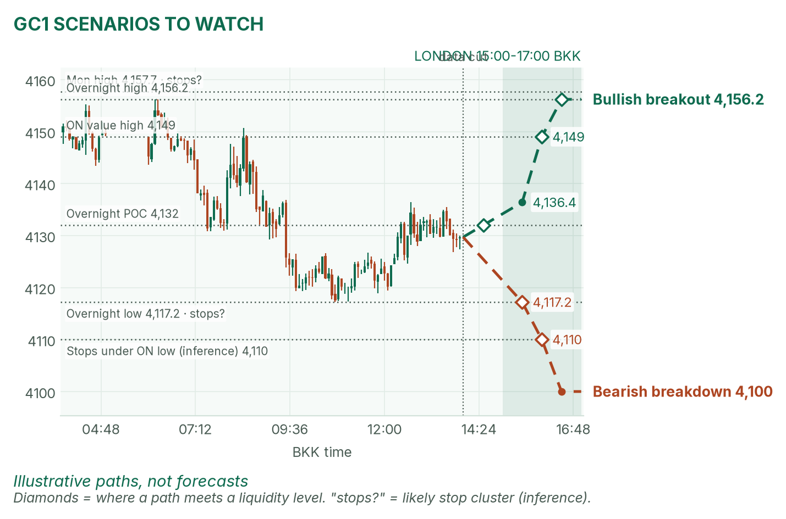
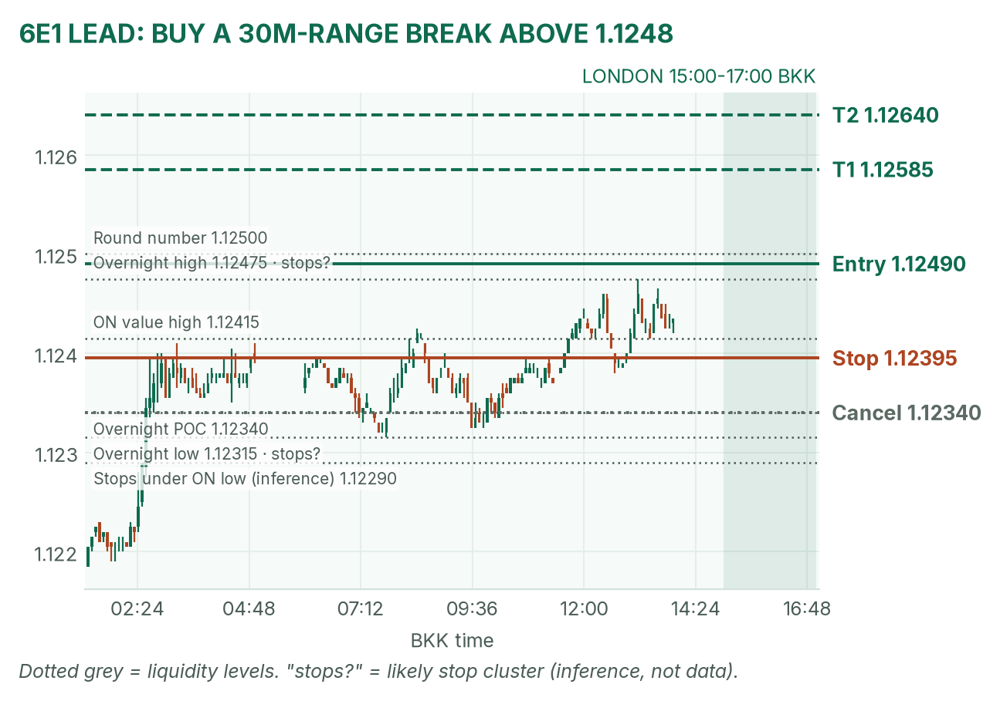
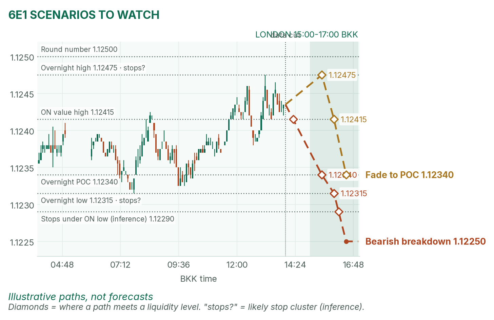

Everything is coiled before CPI. Gold sits on its busiest price; the euro leans on its overnight high.
Window 15:00–17:00 BKK (UK clocks are back on GMT). Data cut 14:00 BKK: GC 4,129.7, 6E 1.12435 (TopstepX Dec contracts, last completed 5-minute bar). Levels only, flat by 17:00. Ideas, not advice. April's pre-London brief (~13:15 BKK) was read.
Summary
GC: buy a dip into 4,118–4,121, stop 4,112.5, targets 4,127.5 and 4,132. About 40% once filled.
6E: buy a break above 1.12490, stop 1.12395, targets 1.12585 and 1.12640. About 38%.
Fed Governor Waller speaks at 16:00, mid-window. No entries 15:55–16:02.
The market story
Monday was Wall Street's best day since April, and fear drained fast: the VIX closed at 19.92, down 22%. Since the 06:00 reopen, though, nothing has trended. Gold and the euro sit mid-range.
The reason is tonight's US CPI (October inflation) at 20:30. Markets price over 80% odds of a hike. Yields are creeping up (10-year 4.882%), which normally weighs on gold because gold pays no interest. Into a big release, I expect ranges and snap-backs to the POC (the busiest price), not trends.
News (BKK)
Time
Release
Forecast
Prior
Read
14:00
UK unemployment (Sep)
not verified
4.7%
Before the window; may jolt 6E at the open.
16:00
Fed's Waller speaks
speech
n/a
Hawkish (hike talk): GC and 6E dip. Dovish: both lift. No entries 15:55–16:02.
17:00
German ZEW sentiment (Nov)
not verified
28.1
At window close. Be flat by 16:55.
CPI 20:30 (forecast +0.3% headline, +0.2% core month on month) is outside the window. Forecasts I couldn't verify are left blank. Source: April's brief.
Levels to watch
Level
GC
6E
Monday high / low
4,157.7 / 4,062.5
1.12410 / 1.11575
Overnight high (since 06:00)
4,156.2
1.12475
Overnight value high
4,149.0
1.12415
Overnight POC
4,132.0
1.12340
Overnight value low
4,124.0
1.12325
Overnight low
4,117.2
1.12315
Typical London range (last 4)
about 21 points
about 22 pips
Gold (GC1)
Bias: neutral. The weekly trend is up and oil is helping, but rising yields before CPI cap it. The London gold rule: mark the 15:00–15:30 range and fade its edges back to the POC. A typical London session spans about 21 points, roughly 4,119 to 4,140 from here.
The trade: mean-reversion buy
Entry
4,118–4,121 (plan 4,120), after 15:30, on a dip below the range that fails. The zone sits just above the 4,117.2 overnight low.
Stop
4,112.5, under the overnight low and the stops likely parked there (my inference)
Targets
1R partial 4,127.5 · full target 4,132.0 (1.6R), the POC
Cancel
5m close below 4,117.2 before the fill, or no fill by 16:30
Probability
~40%, an estimate. Basis: in 42 sessions (Aug–Oct) GC London ranges mostly failed and fading to the POC worked best; not statistically significant.
Why: buyers held 4,117–4,120 twice today, and the target is where most business was done. If price never dips, there's no trade; don't chase it up. April partly agrees: she marks 4,117.2 as the floor but calls no direction.

GC 5-minute bars into the 14:00 cut. The entry sits just above the overnight low; stops below it are my inference.

Illustrative paths, not forecasts.
Scenarios to watch
Bullish breakout: a 15m close above 4,136.4 (today's afternoon high). Aims for 4,149 value high, then 4,156.2.
Bearish breakdown: a hawkish Waller and a 15m close below 4,117.2. Aims for 4,110, then 4,100.
Euro (6E1)
Bias: mildly bullish. The euro gained 0.72% Monday as the dollar eased, and it is already above Monday's 1.12410 high. The 6E London rule is to trade breakouts of the 15:00–15:30 range. A typical London range is about 22 pips (a pip is 0.0001).
The trade: bullish range breakout
Entry
Buy stop 1.12490, above the 1.12475 overnight high and the 1.1250 round number.
Stop
1.12395, under the 1.12415 value high
Targets
1R partial 1.12585 · full target 1.12640 (1.6R)
Cancel
5m close below the 1.12340 POC before the fill, or no break by 16:30
Probability
~38%, an estimate. Basis: 6E London range breakouts averaged +0.31R over 26 sessions; the full target is past a typical day's range, so I shade it down.
Why: trend, a softer dollar and the range rule line up, and the stop hides behind a real level. A break that falls back inside the range is a loser; take the stop. April agrees: a soft-data path breaks the ceilings.

6E 5-minute bars into the 14:00 cut. The entry sits just above the overnight high and the round number.

Illustrative paths, not forecasts.
Scenarios to watch
Bearish breakdown: a hawkish Waller, then a 5m close below 1.12315. Aims for 1.12250.
Mean reversion: a stall under 1.12475 that fails. Aims for the value high 1.12415, then the POC 1.12340.
NQ (not traded): 27,985.25 at the cut, inside 27,869–28,109; CPI tonight is the risk.
Before you click
ORB bases. GC London: 15:00–15:30 range, fade to POC. GC NY: 20:20 COMEX open until a 2-minute candle's volume drops below half the first two's average, fade to POC. 6E London: 15:00–15:30 range, trade breakouts. NQ NY: 21:30–21:35 range, trade breakouts.
Checklist. 1) Room to today's max loss? 2) Within daily rules? 3) No release within 30 minutes? 4) Agrees with the bias? 5) At a marked level? 6) Setup tagged? 7) Entry, stop, 1R partial, target set? 8) Calm, not chasing?
Reset (60 seconds). Hands off the mouse. Breathe in 4, hold 4, out 6, five times. Name the feeling in one word. Say the plan aloud. "Eager" or "frustrated"? Wait 5 minutes.
TopstepX Dec bars, read-only. Profiles from 5-minute bars; overnight starts 06:00 BKK. DXY, yields, VIX, Fed odds and calendar: April's brief.